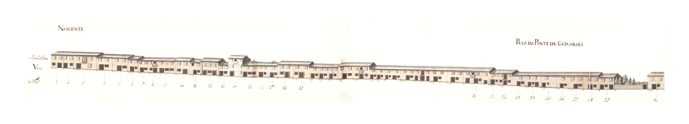
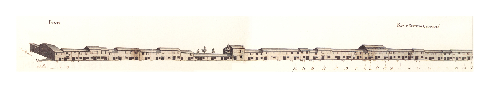
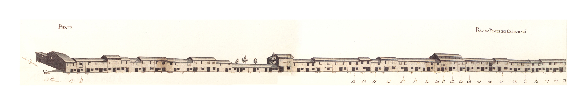

Rua da Ponte de Guimarães
Descrição:
Longa rua que juntamente com as ruas das Ágoas e de S. Lázaro ligava a Arcada com a ponte de Guimarães.
Aberta talvez na Idade Média não nos aparece no Mappa com a importância que deveria ter como via de entrada na cidade de uma estrada antiga e importante, e que no seu limite tinha uma velha ponte.
Em 1750 a rua da Ponte estava repleta de casas de 2 pisos (e muitas delas são de dois pisos bastante baixos) com porta ladeada de janela no rés-do-chão e duas janelas bracarenses no primeiro andar. Uma única há com um segundo andar (embora haja outra de dois pisos com mais um recuado), mas há várias que são térreas e, inclusivé, há zonas apenas, muradas que davam acesso directo a campos. De notar ainda a pequeníssima quantidade de gelosias e de varandas.
Ao mesmo tempo, e da mesma maneira que a rua de S. Lázaro, as casas aqui são, não só um pouco mais largas que as da rua Direita que poderá parecer tipologicamente semelhante, mas também tem «molduras» de pedras em muitas portas e algumas das janelas.
No extremo Norte da rua, do lado Poente, ficava a capela de S. Lázaro, que a partir de 1747, data da criação da freguesia do mesmo nome, passou a paroquial. Das 60 casas do lado Nascente e 72 do Poente eram prazos do Cabido 48 e 40, respectivamente.
Esta rua corresponde hoje ao troço da avenida da Liberdade entre a rua 25 de Abril e o largo das Latinhas ou do Senhor dos Aflitos.
Domingos Gomes, sombreireiro, casado com Ursula Fernandes, paga 2280 reis, ao n° 1 da Rua de S. Lázaro. A casa nº 1 confronta, do norte, com a casa nº 23 da dita Rua de S. Lázaro e, de poente, com a Rua da Ponte de Guimarães e Terreiro de S. Lázaro.
O Padre Geraldo Duarte paga, de pensão ou foro, 3030 reis ao n° 1 da Rua de S. Lázaro. Esta casa situa-se na Rua da Ponte de Guimarães e Terreiro de S. Lázaro.
João Gomes de Sousa, paga 1040 reis ao nº 1 da Rua de S. Lázaro. Estas casas encontram-se unidas desde o ano de 1580.
Helena de Araújo, viúva de Martinho de Araújo, paga 347 reis, ao n° 1 da Rua de S. Lázaro.
O Padre João Marques de Araújo paga 347 reis, ao nº 1 da Rua de S. Lázaro.
Filipe Jácome de Azevedo, casado com Rosa Ribeiro, paga 365 reis, ao nº 1 da Rua de S. Lázaro. Esteve unida ao n° 7 até ao ano de 1720.
Helena, filha de Agostinho Pinto, paga 575 reis, ao nº 1 da Rua de S. Lázaro.
Senhorinha da Rocha, viúva de Manuel Carvalho, sangrador, paga 570 reis, ao n° 1 da Rua de S. Lázaro.
Sebastiana de Arames, viúva de Pedro Gonçalves, sombreireiro, paga ao nº 1 da Rua de S. Lázaro, 205 reis e. 845 reis, por cada uma destas casas.
Veríssimo Ferreira, tintureiro, casado com Mariana Ferreira, paga 255 reis, ao nº 1 da Rua de S. Lázaro.
Manuel Francisco de Araújo, casado com Maria de Sousa, paga 295 reis, ao nº 1 da Rua de S. Lázaro.
António Ferreira de Azevedo, armeiro, paga 825 reis, ao n° 1 da Rua de S. Lázaro.
Domingas de Azevedo, viúva, paga 825 reis, ao n° 1 da Rua de S. Lázaro.
Encontram-se unidas desde 1680.
Francisco Correia, sombreireiro, casado com Maria Ferreira, paga 1040 reis ao nº 1 da Rua de S. Lázaro.
Encontram-se unidas desde 1658.
Os herdeiros de Pedro Jorge, clérigo, pagam 600 reis, ao n° 17 da Rua Paio Manta. Foi construída antes de 1586. Confronta, do norte, com casa foreira a Manuel José de Brito.
Os herdeiros do Dr. Gonçalo da Silva, Dezembargador de Braga, pagam 600 reis ao nº 17 da Rua Paio Manta e Lages. Encontram- -se unidas, numa só morada, desde 1586.
Os herdeiros de Salvador João, alfaiate, casado com Isabel Dias, pagam 175 reis ao nº 17 da Rua Paio Manta e Lages.
Encontra-se separada do nº 24 desde 1638.
Os herdeiros de Rodrigo Anes, alfaite, pagam 600 reis ao nº 17 da Rua Paio Manta e Lages.
Os herdeiros de Domingos Pires, picheleiro. casado com Isabel Vaz, pagam 500 reis ao nº 17 da Rua Paio Manta e Lages. A casa nº 26 encontra-se unida à nº 25 desde 1586/.
Domingos João, tratante, casado com Francisca Antónia, paga 360 reis ao nº 17 da Rua Paio Manta e Lages. Esteve unida ao nº 25 entre os anos de 1586 a 1631.
Os herdeiros de Manuel Marçal, sapateiro, casado com Branca Vaz, pagam 1400 reis ao n° 17 da Rua Paio Manta e Lages. Encontram-se unidas desde 1586. A casa nº 29 confronta, do sul, com o quintal e este com o n° 30.
Os herdeiros de Domingos Simões, sombreireiro, casado com Simoa Vieira, pagam 1615 reis ao n° 17 da Rua Paio Manta e Lages.
Encontram-se unidas, numa só escritura de prazo, desde 1586. A casa n° 34 confronta, do sul, com quintal da casa n° 35.
Os herdeiros de João de Azevedo, casado com Inês André, pagam 1 alqueire e meio de trigo ao enfiteuta principal do prazo da metade do Casal dos Galos, que foi de Maria André, irmã de Inês André.
Ao nº 35 pertence, ainda, todo o quintal que se situa à face da rua.
Os herdeiros de Domingos Gonçalves, casado com Catarina Domingues, pagam 500 reis ao enfiteuta principal do prazo da metade do Casal dos Galos que foi de Mateus Rodrigues, serralheiro da Ponte de Guimarães,. casado com Margarida Francisca.
Os herdeiros de Belchior Fernandes, alfaiate, casado com Catarina Simões, pagam 500 reis.
Foi subemprazada em 1589, à face do prazo da metade do Casal dos Galos. (sito na freguesia de S. José de S. Lázaro), que foi de Mateus Rodrigues.
Os herdeiros de Geraldo Gonçalves, cutileiro, casado com Catarina Luís, pagam 500 reis. Foi subemprazada em 1589, à face do prazo da metade do Casal dos Galos que foi de Mateus Rodrigues.
Os herdeiros de Jerónimo Pinheiro, cónego de Braga, pagam 500 reis. Foi subemprazada em 1589. à face do prazo da metade do Casal dos Galos que foi de Mateus Rodrigues.
Os herdeiros de Jerónimo Pinheiro, cónego de Braga. pagam 500 reis. Foi subemprazada em 1589, à face do prazo da metade do Casal dos Galos, que foi de Mateus Rodrigues.
Os herdeiros de André Martins, casado com Maria de Araújo, pagam 500 reis. Foi subemprazada em 1592, à face do prazo da metade do Casal dos Galos que foi de Mateus Rodrigues.
Os herdeiros de Francisco Rodrigues, casado com Catarina Francisca, pagam 500 reis. Foi subemprazada em 1600, à face do prazo da metade do Casal dos Galos que foi de Mateus Rodrigues.
Os herdeiros de João Francisco, alfaiate. casado com Catarina Francisca, pagam 220 reis. Foi subemprazada em 1616, à face do prazo da metade do Casal dos Galos, que foi de Mateus Rodrigues.
Os herdeiros de António Nunes, cutileiro, casado com Ana Brás, pagam 230 reis. Foi subemprazada em 1616, à face do prazo da metade do Casal dos Galos que foi de Mateus Rodrigues.
Os herdeiros de António Dias, cutileiro, casado com Mécia Rodrigues, pagam 100 reis. Foi subemprazada em 1617, à face do prazo da metade do Casal dos Galos que foi de Mateus Rodrigues.
Os herdeiros de António Dias, cutileiro. casado com Mécia Rodrigues, pagam 100 reis. Foi subemprazada em 1617, à face do prazo da metade do Casal dos Galos que foi de Mateus Rodrigues.
Os herdeiros de Gonçalo Francisco, casado com Filipa Fernandes, pagam 80 reis. Foi subemprazada em 1628, à face do prazo da metade do Casal dos Galos que foi de Mateus Rodrigues. Confronta, do sul, com o caminho que vai da Rua da Ponte de Guimarães.
Os herdeiros de António Dias, ferreiro, casado com Isabel Fernandes, pagam 500 reis ao nº 17 da Rua Paio Manta e Lages, pelo subemprazamento feito em 1616. Situa-se no canto da Rua da Ponte de Guimarães, para a parte do rio. Confronta, do sul, com o caminho que vai da mesma rua para as Lages e para os Pelames.
Os subenfiteutas pagam 150 reis pelo quintal ao n° 17 da Rua Paio Manta e Lages. A casa é foreira a um vínculo. Confronta, de norte, com casa do mesmo vínculo.
Os herdeiros de Branca Lopes, viúva, pagam, 260 reis ao nº 17 da Rua Paio Manta e Lages, pelo subemprazamento feito em 1586. Confronta, do sul. com cada foreira a um vínculo.
Os herdeiros de Branca Lopes, viúva, pagam 260 reis ao n' 17 da Rua Paio Manta e Lages.
Os herdeiros de Francisco Fernandes, pedreiro. casado com Francisca Gonçalves, pagam 310 reis ao nº 17 da Rua Paio Manta e Lages.
Entre os anos de 1586 e 1654, esteve unida ao nº 56.
Os herdeiros de Sebastião Gonçalves, sombreireiro, casado com Inês de Freitas, pagam 320 reis ao n° 17 da Rua Paio Manta e Lages.
Os herdeiros de Luís Ribeiro, sombreireiro, casado com Isabel Vieira, pagam 310 reis ao nº 17 da Rua Paio Manta e Lages.
Os herdeiros de Luís Ribeiro, sombreireiro. casado com Isabel Vieira, pagam 310 reis ao nº 17 da Rua Paio Manta e Lages. Esteve unida ao nº 57 nos subemprazamentos de 1647 e 1684.
Pagam 450 reis ao n° 17 da Rua Paio Manta e Lages.
Pagam 250 reis ao n° 17 da Rua Paio Manta e Lages.
Pagam 350 reis ao n° 17 da Rua Paio Manta e Lages.
Pagam 450 reis ao n° 17 da Rua Paio Manta e Lages.
Os herdeiros de António Simões, cardador. casado com Maria Pereira, pagam 310 reis ao nº 17 da Rua Paio Manta e Lages, pelo subemprazamento feito em 1637.
Os herdeiros de Francisco Luís, sombreireiro, casado com Ângela Geraldes, pagam 310 reis ao nº 17 da Rua Paio Manta e Lages.
Esteve unida ao nº 66 entre os anos de 1586 e 1637.
Os herdeiros de Nicolau Dias, sombreireiro, casado com Catarina Geraldes, pagam 480 reis ao nº 17 da Rua Paio Manta e Lages.
Paga 300 reis ao nº 17 da Rua Paio Manta e Lages. Esteve unida ao n° 68, entre os anos de 1586 e 1615.
Os herdeiros de Maria Gonçalves, viúva de Simão Álvares, tecelão, pagam 300 reis ao nº 17 da Rua Paio Manta e Lages, conforme o subemprezamento de 1615.
Os herdeiros de Geraldo Gonçalves, serralheiro. casado com Catarina Luís, pagam 280 reis, ao nº 17 da Rua Paio Manta e Lages, conforme a subemprazamento de 1612.
Os herdeiros de Aires Dias, rei da Mourisca, casado com Ana Gonçalves, pagam 600 reis ao n° 17 da Rua Paio Manta e Lages, pelo subemprazamento feito em 1583.
Os herdeiros de André Gomes, ferreiro, casado com Francisca Gomes, pagam 500 reis ao n° 1 da Rua de S. Lázaro, pelo subemprazamento feito em 1720. Confronta, do sul, com casa do vínculo de Tadeu Luís de Guimarães.
Os herdeiros de Gaspar Álvares, sapateiro, casado com Ana de Moure, pagam 240 reis ao nº 1 da Rua de S. lázaro, pelo subemprazamento feito em 1629.
Os herdeiros de António Ferreira de Azevedo, espingardeiro, pagam 1400 reis ao nº 1 da Rua de S. Lázaro, conforme subemprazamento feito em 1726.
Estas casas encontram-se unidas desde 1675.
Águeda de Araújo, filha de Manuel de Araújo. paga 570 reis ao nº 1 da Rua de S. Lázaro.
Jerónimo de Freitas, sombreireiro, casado com Teresa Ribeiro, paga 565 reis ao n° 1 da Rua de S. Lázaro.
Domingos de Sousa Borlento, casado com Jerónima do Espírito Santo, paga 545 reis ao nº 1 da Rua de S. Lázaro.
Manuel Gomes, latoeiro, casado com Mariana Pereira, paga 430 reis ao n° 1 da Rua de S. Lázaro.
António Ferreira Gomes, sineiro, casado com Amónia de Barros, paga 835 reis ao nº 1 da Rua de S. Lázaro.
José Martins, sombreireiro, casado com Isabel Duarte, paga 440 reis ao nº 1 da Rua de S. Lázaro.
Maria de Oliveira, casada com Agostinho Ferreira da Rocha, sineiro, paga 1070 reis ao n° 1 da Rua de S. Lázaro.
Custódio Francisco, casado com Maria da Rosa de Barros, paga 1025 reis ao nº 1 da Rua de S. Lázaro.
A casa nº 88 confronta, do norte, com o Terreiro de S. Lázaro e encontra-se unida ao n° 87, desde o ano de 1584.
D. Francisca Xavier Carneiro Tinoco, viúva de Gregório José da Silva Gayo, por sucessão de seus pais, Manuel Álvares Tinoco, cidadão de Braga, e de sua mulher, Catarina Carneiro, paga 10 reis e 3 galinhas, ao n° 42 da Rua de S. Lázaro, por uma leira com serventia de portal para o Terreiro de S. Lázaro. O portal confronta, do sul, com casa da capela de S. Lázaro.
Esta leira pertenceu ao prazo n° 11 da Rua de Trás de S. Marcos (Granjinhos), e à face dele foram feitas escrituras subalternas dos nº 90, 91 e 92.
Francisco Gomes, casado com Jacinta Ferreira, paga 1700 reis ao subenfiteuta do n° 89 e 1 galinha ao n° 42 da Rua de S. Lázaro.
Custódio Ferreira, carpinteiro, casado com Catarina de Araújo, paga 1603 reis ao n° 89 e 1 galinha ao nº 42 da Rua de S. Lázaro.
António Francisco, ferreiro, casado com Maria de Freitas, paga 1603 reis ao nº 89 e 1 galinha. em nome do mesmo subenfiteuta, ao n° 42 da Rua de S. Lázaro. Este número corresponde a um «chão de casa» e confronta, do norte, com casa foreira à Capela de D. Gonçalo Pereira.
Casas:
| Número | Enfiteuta | Foro | Descrição |
|---|---|---|---|
| 1 e 2 | Lopo de Barros e Almeida | Domingos Gomes, sombreireiro, casado com Ursula Fernandes, paga 2280 reis, ao n° 1 da Rua de S. Lázaro. A casa nº 1 confronta, do norte, com a casa nº 23 da dita Rua de S. Lázaro e, de poente, com a Rua da Ponte de Guimarães e Terreiro de S. Lázaro. | |
| 3 | Lopo de Barros e Almeida | O Padre Geraldo Duarte paga, de pensão ou foro, 3030 reis ao n° 1 da Rua de S. Lázaro. Esta casa situa-se na Rua da Ponte de Guimarães e Terreiro de S. Lázaro. | |
| 4 e 5 | Lopo de Barros e Almeida | João Gomes de Sousa, paga 1040 reis ao nº 1 da Rua de S. Lázaro. Estas casas encontram-se unidas desde o ano de 1580. | |
| 6 | Lopo de Barros e Almeida | Helena de Araújo, viúva de Martinho de Araújo, paga 347 reis, ao n° 1 da Rua de S. Lázaro. | |
| 7 | Lopo de Barros e Almeida | O Padre João Marques de Araújo paga 347 reis, ao nº 1 da Rua de S. Lázaro. | |
| 8 | Lopo de Barros e Almeida | Filipe Jácome de Azevedo, casado com Rosa Ribeiro, paga 365 reis, ao nº 1 da Rua de S. Lázaro. Esteve unida ao n° 7 até ao ano de 1720. | |
| 9 | Lopo de Barros e Almeida | Helena, filha de Agostinho Pinto, paga 575 reis, ao nº 1 da Rua de S. Lázaro. | |
| 10 | Lopo de Barros e Almeida | Senhorinha da Rocha, viúva de Manuel Carvalho, sangrador, paga 570 reis, ao n° 1 da Rua de S. Lázaro. | |
| 11 e 12 | Lopo de Barros e Almeida | Sebastiana de Arames, viúva de Pedro Gonçalves, sombreireiro, paga ao nº 1 da Rua de S. Lázaro, 205 reis e. 845 reis, por cada uma destas casas. | |
| 13 | Lopo de Barros e Almeida | Veríssimo Ferreira, tintureiro, casado com Mariana Ferreira, paga 255 reis, ao nº 1 da Rua de S. Lázaro. | |
| 14 | Lopo de Barros e Almeida | Manuel Francisco de Araújo, casado com Maria de Sousa, paga 295 reis, ao nº 1 da Rua de S. Lázaro. | |
| 15 | Lopo de Barros e Almeida | António Ferreira de Azevedo, armeiro, paga 825 reis, ao n° 1 da Rua de S. Lázaro. | |
| 16 e 17 | Lopo de Barros e Almeida | Domingas de Azevedo, viúva, paga 825 reis, ao n° 1 da Rua de S. Lázaro. Encontram-se unidas desde 1680. | |
| 18 e 19 | Lopo de Barros e Almeida | Francisco Correia, sombreireiro, casado com Maria Ferreira, paga 1040 reis ao nº 1 da Rua de S. Lázaro. Encontram-se unidas desde 1658. | |
| 20 | Pedro da Cunha Sottomayor, Alcaide Mor de Braga | Os herdeiros de Pedro Jorge, clérigo, pagam 600 reis, ao n° 17 da Rua Paio Manta. Foi construída antes de 1586. Confronta, do norte, com casa foreira a Manuel José de Brito. | |
| 21 e 22 | Pedro da Cunha Sottomayor, Alcaide Mor de Braga | Os herdeiros do Dr. Gonçalo da Silva, Dezembargador de Braga, pagam 600 reis ao nº 17 da Rua Paio Manta e Lages. Encontram- -se unidas, numa só morada, desde 1586. | |
| 23 | Pedro da Cunha Sottomayor, Alcaide Mor de Braga | Os herdeiros de Salvador João, alfaiate, casado com Isabel Dias, pagam 175 reis ao nº 17 da Rua Paio Manta e Lages. Encontra-se separada do nº 24 desde 1638. | |
| 24 | Pedro da Cunha Sottomayor, Alcaide Mor de Braga | Os herdeiros de Rodrigo Anes, alfaite, pagam 600 reis ao nº 17 da Rua Paio Manta e Lages. | |
| 25 e 26 | Pedro da Cunha Sottomayor, Alcaide Mor de Braga | Os herdeiros de Domingos Pires, picheleiro. casado com Isabel Vaz, pagam 500 reis ao nº 17 da Rua Paio Manta e Lages. A casa nº 26 encontra-se unida à nº 25 desde 1586/. | |
| 27 | Pedro da Cunha Sottomayor, Alcaide Mor de Braga | Domingos João, tratante, casado com Francisca Antónia, paga 360 reis ao nº 17 da Rua Paio Manta e Lages. Esteve unida ao nº 25 entre os anos de 1586 a 1631. | |
| 28 e 29 | Pedro da Cunha Sottomayor, Alcaide Mor de Braga | Os herdeiros de Manuel Marçal, sapateiro, casado com Branca Vaz, pagam 1400 reis ao n° 17 da Rua Paio Manta e Lages. Encontram-se unidas desde 1586. A casa nº 29 confronta, do sul, com o quintal e este com o n° 30. | |
| 30, 31, 32, 33 e 34 | Pedro da Cunha Sottomayor, Alcaide Mor de Braga | Os herdeiros de Domingos Simões, sombreireiro, casado com Simoa Vieira, pagam 1615 reis ao n° 17 da Rua Paio Manta e Lages. Encontram-se unidas, numa só escritura de prazo, desde 1586. A casa n° 34 confronta, do sul, com quintal da casa n° 35. | |
| 35, 36, 37 e 38 | João de Magalhães de Araújo Costa, enfiteuta principal do prazo da metade do Casal dos Galos, que foi de Maria André. | Os herdeiros de João de Azevedo, casado com Inês André, pagam 1 alqueire e meio de trigo ao enfiteuta principal do prazo da metade do Casal dos Galos, que foi de Maria André, irmã de Inês André. Ao nº 35 pertence, ainda, todo o quintal que se situa à face da rua. | |
| 39 | João de Magalhães de Araújo Costa, enfiteuta principal do prazo da metade do Casal dos Galos, que foi de Mateus Rodrigues. | Os herdeiros de Domingos Gonçalves, casado com Catarina Domingues, pagam 500 reis ao enfiteuta principal do prazo da metade do Casal dos Galos que foi de Mateus Rodrigues, serralheiro da Ponte de Guimarães,. casado com Margarida Francisca. | |
| 40 | João de Magalhães de Araújo Costa, enfiteuta principal do prazo da metade do Casal dos Galos, que foi de Mateus Rodrigues. | Os herdeiros de Belchior Fernandes, alfaiate, casado com Catarina Simões, pagam 500 reis. Foi subemprazada em 1589, à face do prazo da metade do Casal dos Galos. (sito na freguesia de S. José de S. Lázaro), que foi de Mateus Rodrigues. | |
| 41 | João de Magalhães de Araújo Costa, enfiteuta principal do prazo da metade do Casal dos Galos, que foi de Mateus Rodrigues. | Os herdeiros de Geraldo Gonçalves, cutileiro, casado com Catarina Luís, pagam 500 reis. Foi subemprazada em 1589, à face do prazo da metade do Casal dos Galos que foi de Mateus Rodrigues. | |
| 42 | João de Magalhães de Araújo Costa, enfiteuta principal do prazo da metade do Casal dos Galos, que foi de Mateus Rodrigues. | Os herdeiros de Jerónimo Pinheiro, cónego de Braga, pagam 500 reis. Foi subemprazada em 1589. à face do prazo da metade do Casal dos Galos que foi de Mateus Rodrigues. | |
| 43 | João de Magalhães de Araújo Costa, enfiteuta principal do prazo da metade do Casal dos Galos, que foi de Mateus Rodrigues. | Os herdeiros de Jerónimo Pinheiro, cónego de Braga. pagam 500 reis. Foi subemprazada em 1589, à face do prazo da metade do Casal dos Galos, que foi de Mateus Rodrigues. | |
| 44 | João de Magalhães de Araújo Costa, enfiteuta principal do prazo da metade do Casal dos Galos, que foi de Mateus Rodrigues. | Os herdeiros de André Martins, casado com Maria de Araújo, pagam 500 reis. Foi subemprazada em 1592, à face do prazo da metade do Casal dos Galos que foi de Mateus Rodrigues. | |
| 45 | João de Magalhães de Araújo Costa, enfiteuta principal do prazo da metade do Casal dos Galos, que foi de Mateus Rodrigues. | Os herdeiros de Francisco Rodrigues, casado com Catarina Francisca, pagam 500 reis. Foi subemprazada em 1600, à face do prazo da metade do Casal dos Galos que foi de Mateus Rodrigues. | |
| 46 | João de Magalhães de Araújo Costa, enfiteuta principal do prazo da metade do Casal dos Galos, que foi de Mateus Rodrigues. | Os herdeiros de João Francisco, alfaiate. casado com Catarina Francisca, pagam 220 reis. Foi subemprazada em 1616, à face do prazo da metade do Casal dos Galos, que foi de Mateus Rodrigues. | |
| 47 | João de Magalhães de Araújo Costa, enfiteuta principal do prazo da metade do Casal dos Galos, que foi de Mateus Rodrigues. | Os herdeiros de António Nunes, cutileiro, casado com Ana Brás, pagam 230 reis. Foi subemprazada em 1616, à face do prazo da metade do Casal dos Galos que foi de Mateus Rodrigues. | |
| 48 | João de Magalhães de Araújo Costa, enfiteuta principal do prazo da metade do Casal dos Galos, que foi de Mateus Rodrigues. | Os herdeiros de António Dias, cutileiro, casado com Mécia Rodrigues, pagam 100 reis. Foi subemprazada em 1617, à face do prazo da metade do Casal dos Galos que foi de Mateus Rodrigues. | |
| 49 | João de Magalhães de Araújo Costa, enfiteuta principal do prazo da metade do Casal dos Galos, que foi de Mateus Rodrigues. | Os herdeiros de António Dias, cutileiro. casado com Mécia Rodrigues, pagam 100 reis. Foi subemprazada em 1617, à face do prazo da metade do Casal dos Galos que foi de Mateus Rodrigues. | |
| 50 | João de Magalhães de Araújo Costa, enfiteuta principal do prazo da metade do Casal dos Galos, que foi de Mateus Rodrigues. | Os herdeiros de Gonçalo Francisco, casado com Filipa Fernandes, pagam 80 reis. Foi subemprazada em 1628, à face do prazo da metade do Casal dos Galos que foi de Mateus Rodrigues. Confronta, do sul, com o caminho que vai da Rua da Ponte de Guimarães. | |
| 51 | Pedro da Cunha Sottomayor, Alcaide Mor de Braga | Os herdeiros de António Dias, ferreiro, casado com Isabel Fernandes, pagam 500 reis ao nº 17 da Rua Paio Manta e Lages, pelo subemprazamento feito em 1616. Situa-se no canto da Rua da Ponte de Guimarães, para a parte do rio. Confronta, do sul, com o caminho que vai da mesma rua para as Lages e para os Pelames. | |
| 52 | Pedro da Cunha Sottomayor, Alcaide Mor de Braga | Os subenfiteutas pagam 150 reis pelo quintal ao n° 17 da Rua Paio Manta e Lages. A casa é foreira a um vínculo. Confronta, de norte, com casa do mesmo vínculo. | |
| 53 | Pedro da Cunha Sottomayor, Alcaide Mor de Braga | Os herdeiros de Branca Lopes, viúva, pagam, 260 reis ao nº 17 da Rua Paio Manta e Lages, pelo subemprazamento feito em 1586. Confronta, do sul. com cada foreira a um vínculo. | |
| 54 | Pedro da Cunha Sottomayor, Alcaide Mor de Braga | Os herdeiros de Branca Lopes, viúva, pagam 260 reis ao n' 17 da Rua Paio Manta e Lages. | |
| 55 | Pedro da Cunha Sottomayor, Alcaide Mor de Braga | Os herdeiros de Francisco Fernandes, pedreiro. casado com Francisca Gonçalves, pagam 310 reis ao nº 17 da Rua Paio Manta e Lages. Entre os anos de 1586 e 1654, esteve unida ao nº 56. | |
| 56 | Pedro da Cunha Sottomayor, Alcaide Mor de Braga | Os herdeiros de Sebastião Gonçalves, sombreireiro, casado com Inês de Freitas, pagam 320 reis ao n° 17 da Rua Paio Manta e Lages. | |
| 57 | Pedro da Cunha Sottomayor, Alcaide Mor de Braga | Os herdeiros de Luís Ribeiro, sombreireiro, casado com Isabel Vieira, pagam 310 reis ao nº 17 da Rua Paio Manta e Lages. | |
| 58 | Pedro da Cunha Sottomayor, Alcaide Mor de Braga | Os herdeiros de Luís Ribeiro, sombreireiro. casado com Isabel Vieira, pagam 310 reis ao nº 17 da Rua Paio Manta e Lages. Esteve unida ao nº 57 nos subemprazamentos de 1647 e 1684. | |
| 59 e 60 | Pedro da Cunha Sottomayor, Alcaide Mor de Braga | Pagam 450 reis ao n° 17 da Rua Paio Manta e Lages. | |
| 61 | Pedro da Cunha Sottomayor, Alcaide Mor de Braga | Pagam 250 reis ao n° 17 da Rua Paio Manta e Lages. | |
| 62 e 63 | Pedro da Cunha Sottomayor, Alcaide Mor de Braga | Pagam 350 reis ao n° 17 da Rua Paio Manta e Lages. | |
| 64 e 65 | Pedro da Cunha Sottomayor, Alcaide Mor de Braga | Pagam 450 reis ao n° 17 da Rua Paio Manta e Lages. | |
| 66 | Pedro da Cunha Sottomayor, Alcaide Mor de Braga | Os herdeiros de António Simões, cardador. casado com Maria Pereira, pagam 310 reis ao nº 17 da Rua Paio Manta e Lages, pelo subemprazamento feito em 1637. | |
| 67 | Pedro da Cunha Sottomayor, Alcaide Mor de Braga | Os herdeiros de Francisco Luís, sombreireiro, casado com Ângela Geraldes, pagam 310 reis ao nº 17 da Rua Paio Manta e Lages. Esteve unida ao nº 66 entre os anos de 1586 e 1637. | |
| 68 | Pedro da Cunha Sottomayor, Alcaide Mor de Braga | Os herdeiros de Nicolau Dias, sombreireiro, casado com Catarina Geraldes, pagam 480 reis ao nº 17 da Rua Paio Manta e Lages. | |
| 69 | Pedro da Cunha Sottomayor, Alcaide Mor de Braga | Paga 300 reis ao nº 17 da Rua Paio Manta e Lages. Esteve unida ao n° 68, entre os anos de 1586 e 1615. | |
| 70 | Pedro da Cunha Sottomayor, Alcaide Mor de Braga | Os herdeiros de Maria Gonçalves, viúva de Simão Álvares, tecelão, pagam 300 reis ao nº 17 da Rua Paio Manta e Lages, conforme o subemprezamento de 1615. | |
| 71 | Pedro da Cunha Sottomayor, Alcaide Mor de Braga | Os herdeiros de Geraldo Gonçalves, serralheiro. casado com Catarina Luís, pagam 280 reis, ao nº 17 da Rua Paio Manta e Lages, conforme a subemprazamento de 1612. | |
| 72, 73 e 74 | Pedro da Cunha Sottomayor, Alcaide Mor de Braga | Os herdeiros de Aires Dias, rei da Mourisca, casado com Ana Gonçalves, pagam 600 reis ao n° 17 da Rua Paio Manta e Lages, pelo subemprazamento feito em 1583. | |
| 75 | Lopo de Barros Almeida | Os herdeiros de André Gomes, ferreiro, casado com Francisca Gomes, pagam 500 reis ao n° 1 da Rua de S. Lázaro, pelo subemprazamento feito em 1720. Confronta, do sul, com casa do vínculo de Tadeu Luís de Guimarães. | |
| 76 | Lopo de Barros Almeida | Os herdeiros de Gaspar Álvares, sapateiro, casado com Ana de Moure, pagam 240 reis ao nº 1 da Rua de S. lázaro, pelo subemprazamento feito em 1629. | |
| 77, 78 e 79 | Lopo de Barros Almeida | Os herdeiros de António Ferreira de Azevedo, espingardeiro, pagam 1400 reis ao nº 1 da Rua de S. Lázaro, conforme subemprazamento feito em 1726. Estas casas encontram-se unidas desde 1675. | |
| 80 | Lopo de Barros Almeida | Águeda de Araújo, filha de Manuel de Araújo. paga 570 reis ao nº 1 da Rua de S. Lázaro. | |
| 81 | Lopo de Barros Almeida | Jerónimo de Freitas, sombreireiro, casado com Teresa Ribeiro, paga 565 reis ao n° 1 da Rua de S. Lázaro. | |
| 82 | Lopo de Barros Almeida | Domingos de Sousa Borlento, casado com Jerónima do Espírito Santo, paga 545 reis ao nº 1 da Rua de S. Lázaro. | |
| 83 | Lopo de Barros Almeida | Manuel Gomes, latoeiro, casado com Mariana Pereira, paga 430 reis ao n° 1 da Rua de S. Lázaro. | |
| 84 | Lopo de Barros Almeida | António Ferreira Gomes, sineiro, casado com Amónia de Barros, paga 835 reis ao nº 1 da Rua de S. Lázaro. | |
| 85 | Lopo de Barros Almeida | José Martins, sombreireiro, casado com Isabel Duarte, paga 440 reis ao nº 1 da Rua de S. Lázaro. | |
| 86 | Lopo de Barros Almeida | Maria de Oliveira, casada com Agostinho Ferreira da Rocha, sineiro, paga 1070 reis ao n° 1 da Rua de S. Lázaro. | |
| 87 e 88 | Lopo de Barros Almeida | Custódio Francisco, casado com Maria da Rosa de Barros, paga 1025 reis ao nº 1 da Rua de S. Lázaro. A casa nº 88 confronta, do norte, com o Terreiro de S. Lázaro e encontra-se unida ao n° 87, desde o ano de 1584. | |
| 89 | Pedro Gomes de Basto, c.c. Maria de Magalhães | D. Francisca Xavier Carneiro Tinoco, viúva de Gregório José da Silva Gayo, por sucessão de seus pais, Manuel Álvares Tinoco, cidadão de Braga, e de sua mulher, Catarina Carneiro, paga 10 reis e 3 galinhas, ao n° 42 da Rua de S. Lázaro, por uma leira com serventia de portal para o Terreiro de S. Lázaro. O portal confronta, do sul, com casa da capela de S. Lázaro. Esta leira pertenceu ao prazo n° 11 da Rua de Trás de S. Marcos (Granjinhos), e à face dele foram feitas escrituras subalternas dos nº 90, 91 e 92. | |
| 90 | Pedro Gomes de Basto, c.c. Maria de Magalhães | Francisco Gomes, casado com Jacinta Ferreira, paga 1700 reis ao subenfiteuta do n° 89 e 1 galinha ao n° 42 da Rua de S. Lázaro. | |
| 91 | Pedro Gomes de Basto, c.c. Maria de Magalhães | Custódio Ferreira, carpinteiro, casado com Catarina de Araújo, paga 1603 reis ao n° 89 e 1 galinha ao nº 42 da Rua de S. Lázaro. | |
| 92 | Pedro Gomes de Basto, c.c. Maria de Magalhães, D. Francisca Xavier Carneiro Tinoco | António Francisco, ferreiro, casado com Maria de Freitas, paga 1603 reis ao nº 89 e 1 galinha. em nome do mesmo subenfiteuta, ao n° 42 da Rua de S. Lázaro. Este número corresponde a um «chão de casa» e confronta, do norte, com casa foreira à Capela de D. Gonçalo Pereira. |
Imagens:
 

Fotos atuais da rua: